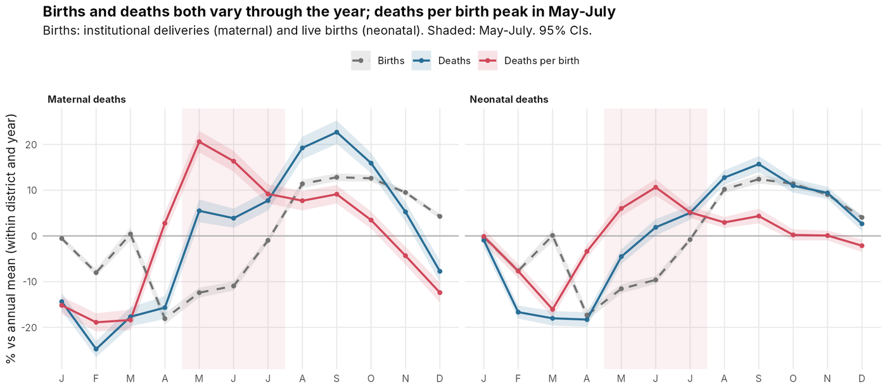
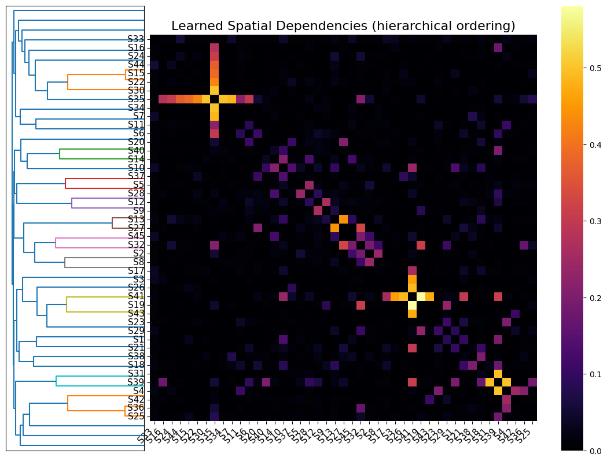

I work where numerical optimisation meets machine-learned interatomic potentials, to make atomistic simulation cheaper and more reliable.
Who. Final-year B.Tech. in Chemical Engineering at IIT Bombay, with a minor in Artificial Intelligence and Data Science. CPI 9.74 / 10 and the Institute Academic Prize, 2025.
Now. Machine-learned Hessian preconditioning for nudged elastic band searches, with Prof. Sudarshan Vijay; and how heat shapes maternal and newborn deaths across India, with Prof. Saket Choudhary.
Methods. Numerical optimisation, transition-state search, machine-learned interatomic potentials, graph neural networks, panel models with fixed effects, and fine-tuned language models.
Finding transition states with machine-learned curvature
Ongoing · B.Tech. project with Prof. Sudarshan Vijay, IIT Bombay · since May 2025
Nudged elastic band
MACE-MP-0
Hessian preconditioning
Safeguarded L-BFGS
To learn how a reaction happens, you need its transition state: the highest point on the lowest-energy path between reactant and product. The nudged elastic band (NEB) method finds that path, but every step costs force calls, usually from DFT.
I precondition the optimiser with the Hessian of a machine-learned potential (MACE-MP-0), projected onto the directions perpendicular to the path and paired with an analytical spring-force Jacobian along it, inside a safeguarded L-BFGS. The hard part was working out why curvature-based preconditioning breaks down near a saddle point, where the Hessian is indefinite and the two subspaces leak into each other.
This work33 / 60
FIRE28 / 60
This work22 / 31
FIRE14 / 31
This work11 / 26
FIRE7 / 26
Band evaluations relative to FIRE
Median over the 24 systems where both methods converged
0.18× 95% CI 0.14–0.23
FIRE1.0
This work0.18
60-system benchmark: OC20NEB surface reactions, Transition1x gas-phase reactions, diffusion and conformer changes. The held-out set was sealed before testing. Forces from MACE; evaluation counts exclude Hessian construction; validation with DFT forces is in progress.
The hot-season peak in maternal and newborn deaths in India
Manuscript in preparation · R&D project with Prof. Saket Choudhary, Koita Centre for Digital Health, IIT Bombay
Poisson fixed-effects models
ERA5 climate data
NFHS-5
772 districts, 2009–2024
Births in India are seasonal, but the deaths of mothers and newborns follow a different calendar. Using district-month health records for 772 districts from 2009 to 2024, linked to ERA5 climate and NFHS-5 survey data, I show that deaths per birth peak every year in May–July, the hottest months.
Poisson models with district-by-year fixed effects compare each district only with itself. The peak survives five different birth registers as denominators, and the neonatal peak appears independently in the national household survey.
+42% / +22%
maternal / neonatal deaths per birth in May–July vs. February–March
69%
of the maternal seasonal pattern reproduced by temperature alone

Births, deaths and deaths per birth by month, relative to each district’s annual mean in the same year. Shaded: May–July.
More projects
Spatiotemporal graph networks for multi-store forecastingGraph ML · preprint2025+
Preprint · Course project, EE782, with Prof. Amit Sethi · with Arpita Dayama · Aug–Nov 2025
Retail stores share trends, so forecasting them one at a time throws information away. We forecast weekly sales for 45 Walmart stores jointly with a spatiotemporal GNN that learns its own store-to-store graph, combining dilated temporal convolutions with graph convolution, and compared it with ARIMA, XGBoost and LSTM under identical features and splits. The learned graph recovered functional groups of stores without any location data.
2.08%
MAPE on Store 37, nearly 50% lower than ARIMA

Learned spatial dependencies between stores, ordered by hierarchical clustering.
Quant Auditor: a small language model that audits trading backtestsLLM agents · course projectOngoing+
Ongoing · Course project, IE624 Generative and Agentic AI · team of two, with Arpita
A trading strategy can look profitable only because of hidden mistakes such as look-ahead, ignored trading costs or in-sample tuning. I am building an auditor agent that investigates strategy code by running experiments on it, with one rule: no number reaches the user unless it is cited to its source or produced by an executed test. It is trained on flawed backtests paired with clean controls that differ in exactly one detail, using a fine-tuned Qwen3-4B on free GPUs.
~70%
of 30 popular public backtest notebooks that simulate profits had at least one major flaw (audited by hand)
2,921
matched pairs of flawed and clean backtests on 20 years of real prices
Generative AI for drug discoveryGenerative chemistry · 1st of 64,000+2025+
1st of 64,000+ participants · Google Solution Challenge 2025 · team project
A protein-conditioned recurrent network generates candidate molecules for a given target: a bidirectional LSTM with attention encodes the protein, and the generator is trained on 550K+ BindingDB samples. Candidates are ranked on drug-likeness, toxicity, solubility and predicted binding, using DiffDock and MolFormer.
Questions that determine the ‘babu’: a comprehensive analysis of India’s UPSC Civil Services Mains Examination General Studies questionsManish*, Arnav Pandey*, Syaamantak Das*SSRN 5077877, 2024
Machine-learned Hessian preconditioning for nudged elastic band transition-state searchesManish, Sudarshan VijayarXiv preprint planned for late 2026
The hot-season peak in maternal and neonatal deaths in India: a national district-level analysis, 2009–24Manish, Saket ChoudharyManuscript in preparation
* equal contribution. Titles of manuscripts in preparation are working titles.
About
I’m Manish, a chemical engineering student at IIT Bombay with a minor in AI and data science. Most of my time goes into transition-state search: teaching an optimiser to borrow curvature from a machine-learned potential so that it needs fewer expensive force calls. Alongside it, I work on public-health data at the Koita Centre for Digital Health, asking why maternal and newborn deaths rise in the hottest months. Beyond research, I have built a pricing engine for path-dependent FX products at Morgan Stanley, an earnings-call and filings pipeline at iWealth, and production cloud infrastructure for Dreamplan, a Danish wealth-advice platform. I have also run weekly linear-algebra tutorials for first-year students, and my team placed first of 64,000+ in the Google Solution Challenge. If any of this overlaps with your work, let’s talk.
Experience
May–Jul 2026Summer Associate, Asia FX Structuring, Morgan Stanley Built a pricing engine for path-dependent FX products, validated on 40+ benchmark trades to within 1 bp.
Aug–Sep 2025Quant Developer, iWealth India LLP Built an earnings-call transcription pipeline and a filings summariser that saved the investment team 5+ hours of reading a day.
Jan–May 2025Teaching Assistant, MA110 Linear Algebra and Differential Equations, IIT Bombay Weekly tutorials and grading for 40+ first-year students.
Aug 2024–May 2025Full Stack Developer, Dreamplan.io ApS, Denmark (remote) Shipped production cloud infrastructure for a wealth-advice platform.
Education & honours
2023–2027B.Tech. in Chemical Engineering, Indian Institute of Technology Bombay Minor in Artificial Intelligence and Data Science · CPI 9.74 / 10
2025Institute Academic Prize, IIT Bombay
20251st of 64,000+ participants, Google Solution Challenge
2024–25AP grade (top ~1% of class) in three core chemical engineering courses
2024Perfect 10.0 / 10 semester performance index
Get in touch
A question about the work, a problem worth solving together, or a paper to discuss: write, or book a slot.